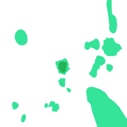
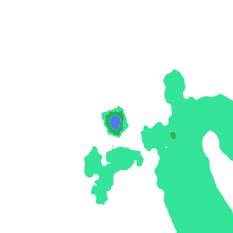
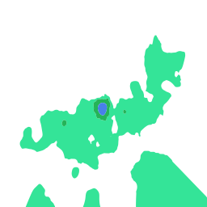
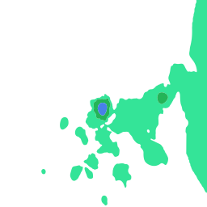

XTSKJSXS · 2026-08-28 11:00
198×192 格网 · 20 多边形 · 已填色 20 · 1.455s
XTSKJSXS · 2026-08-28 12:00

198×192 格网 · 17 多边形 · 已填色 17 · 2.062s
XTSKJSXS · 2026-08-28 00:00
198×192 格网 · 19 多边形 · 已填色 19 · 3.136s
XTSKJSXS · 2026-08-28 01:00
198×192 格网 · 18 多边形 · 已填色 18 · 3.602s
XTSKJSXS · 2026-08-28 02:00
198×192 格网 · 7 多边形 · 已填色 7 · 1.283s
XTSKJSXS · 2026-08-28 03:00
198×192 格网 · 7 多边形 · 已填色 7 · 1.552s
XTSKJSXS · 2026-08-28 04:00
198×192 格网 · 6 多边形 · 已填色 6 · 0.808s
XTSKJSXS · 2026-08-28 05:00
198×192 格网 · 14 多边形 · 已填色 14 · 2.127s
XTSKJSXS · 2026-08-28 06:00

198×192 格网 · 12 多边形 · 已填色 12 · 1.707s
XTSKJSXS · 2026-08-28 07:00
198×192 格网 · 20 多边形 · 已填色 20 · 2.366s
XTSKJSXS · 2026-08-28 08:00
198×192 格网 · 16 多边形 · 已填色 16 · 2.727s
XTSKJSXS · 2026-08-28 09:00

198×192 格网 · 16 多边形 · 已填色 16 · 2.667s
XTSKJSXS · 2026-08-28 10:00

198×192 格网 · 16 多边形 · 已填色 16 · 2.92s